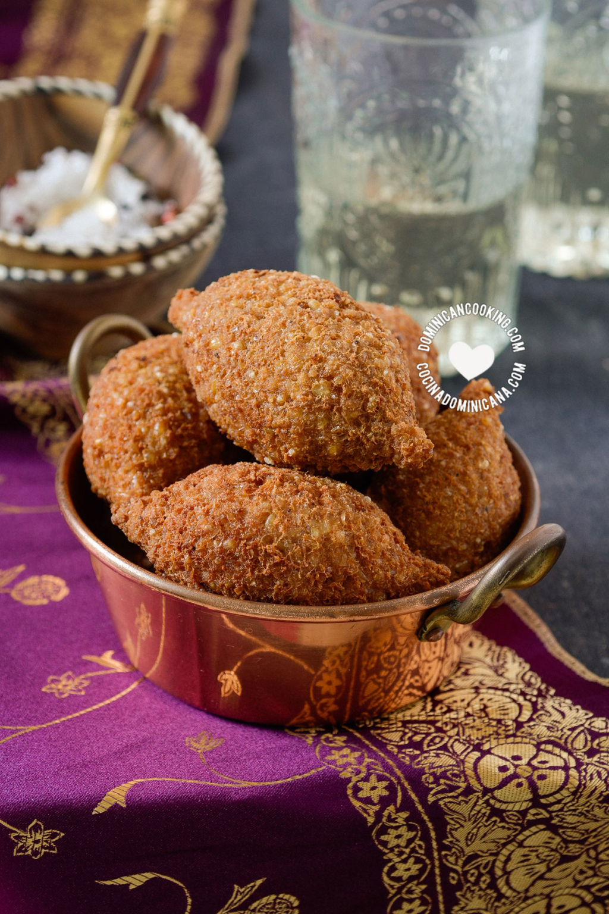

El Kipe (Quipe), una de nuestras recetas más populares, debe sus orígenes a los inmigrantes libaneses quienes se
asentaron en sur de la isla a finales del siglo diecinueve.

Ingredientes
1 taza de trigo entero (bulgur)
1 lb [0.48 kg] de carne de res molida
1 ají cubanela picado
2 hojas de albahaca
1 cebolla pequeña
¼ cucharadita de pimienta
2 cucharaditas de sal
2 tazas de aceite vegetal
½ taza salsa de tomate
¼ taza pasas
Pasos
Antes de empezar:
Remojar trigo: Pon el trigo en un tazón y agrega suficiente agua para cubrir, luego agrega otras cuatro tazas
más de agua y remoja en la nevera durante la noche (ver notas).
Sazonar la carne para los kipes
Hacer sazón: Pica el ají, albahaca y cebolla en el procesador de alimento para obtener una
pasta gruesa.
Sazonar: Pon la carne en un recipiente profundo, mezcla con el sazón que preparaste. Sazona
con pimienta y sal.
Mezclar: Usando tus manos mezcla la carne con los ingredientes con un movimiento similar al
que se usa para
amasar harina.Recuerda lavar las manos antes y después para evitar contaminación cruzada
Separar: Reserva dos tercios de la carne cruda.
Para hacer el relleno para kipes
Calienta dos cucharadas de aceite a fuego medio en una sartén. Cuando el aceite esté caliente agrega el tercio
de la carne que separaste. Dora la carne
Agrega la salsa de tomate y mezcla bien. Agrega ½ taza de agua y las pasas, cuece a fuego medio. Cuando todo
el líquido se haya evaporado deja enfriar a temperatura ambiente.
Como se hacen los kipes
Cuela el trigo, luego exprime con las manos para sacar toda el agua (¡esto es muy importante!). Si no estás
seguro(a) que sacaste toda el agua, sugiero que exprimas el trigo con una toalla de cocina limpia después de
colarlo.
Agrega la carne cruda que habías reservado. Con tus manos, con un movimiento de amasar, mezcla la carne con el
trigo hasta que todo esté uniformemente incorporado. Tómate tu tiempo, de esto depende que no se deshaga el
quipe cuando lo frías. Si lo deseas, mezcla dos minutos en el procesador de alimentos para obtener una cobertura
mucho más compacta y firme.
Pon 3 cucharadas de la mezcla en tus manos y haz una bola. Haz un hoyo en la bola.
Pon una cucharadita del relleno en el hoyo y une cerrando el hoyo. Pellizca los extremos para darle su forma
tradicional, apretando para que quede lo más compacto posible. Refrigera por unas seis horas.
Calienta el aceite a temperatura media (350 ºF [175 ºF]) en un envase de freír profundo. El aceite debe estar
muy caliente o los quipes se romperán.
Cuando sea hora de freír aprietalos un poco para compactarlos más. Con mucho, mucho cuidado (el aceite
caliente y los líquidos fríos no se llevan muy bien) pon el primer quipe en el aceite, es preferible que lo
pongas en una coladera, y no directamente con las manos. Fríe los quipes, de ser posible uno a la vez para que
la temperatura del aceite no baje mucho.
Después de freír, los quipes deben estar dorado oscuro por fuera, cuando frías el primero abre y asegúrate que
no esté crudo por dentro. La carne molida cruda es un tanto peligrosa, así que debes cuidarte que queden bien
cocidos. Pon en una toalla de papel para que drenes el exceso de aceite antes de servir.
Esta receta fue copiada de la página www.cocinadominicana.com